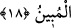

Sonra Allah Teâlâ, sözü uzatmanın bir yararı olmayacağı için onların bu kötü hâline
istidlâl ederek buyurdu ki:
“Bilmelisiniz ki, Allah’ı bırakıp da taptıklarınız, size rızık veremezler.” Bir şeye
muktedir olur ve gücün yeterse “Falan şeye mâlik oldum” dersin. Mûsa (a.s.)’ın: “Ben,
kendimden ve kardeşimden başkasına mâlik olamıyorum” sözü de bu anlamdadır.
Yâni, ancak kendi nefsime ve kardeşim Hârûn’a gücüm yetiyor, demektir.
“O halde rızkı Allah katında arayın,” “
(rizkan)” kelimesi masdardır ve nekre
olarak gelmesi azlık (taklîl) ifâde etmek içindir. Yani, onlar size rızık olarak herhangi
bir şey vermeye güç yetiremezler. Dolayısıyla siz, rızkın tamamını Allah katında arayın.
Çünkü rızkı size ulaştırmağa ancak o kâdirdir.
Sadece “O’na” ibâdet ve “kulluk edin ve O’na” yâni nimetine “şükredin.” İbâdetle
O’ndan isteyin ve nimete şükürle onu elde tutun ve daha fazlasını celbedin.
İbn Atâ der ki: İbâdet ve tâata yönelmekle rızkı talep edin.
Sehl der ki: Rızkı tevekkülde arayın; kazanmakta değil; çünkü onu kazanmakta aramak
avamın yoludur.
“Ancak O’na döndürüleceksiniz” ve öldükten sonra diriltilerek O’nun huzuruna
çıkartılacaksınız. Dolayısıyla emrolunduğunuz şeyleri yapın.
18. Eğer (size tebliğ edileni) yalan sayarsanız, bilin ki sizden önceki birçok
milletler de (kendilerine tebliğ edileni) yalan saymışlardır. Peygamber’e düşen,
yalnız açık bir tebliğdir.
“Eğer (size tebliğ edileni)” yâni benim haber verdiğim şeyleri, Allah’a
döndürüleceğinizi v.s. “yalan sayarsanız, bilin ki sizden önceki birçok milletler de
(kendilerine tebliğ edileni) yalan saymışlardır.”
Âyetin ikinci cümlesi, cevabın ta’lîlîdir. Yâni sizin tekzip edip yalanlamanız bana bir
zarar vermez. Çünkü sizden önceki ümmetler de peygamberlerini yalanlamışlardı.
Bunlar Şît, İdrîs ve Nuh (a.s.)’dır. Onların yalanlamaları peygamberlerine bir zarar
vermedi; ancak onlar kendi nefislerine zarar verdiler ve bu sebeple ilâhî azâba
uğradılar. İşte sizin de beni yalanlamanız böyledir.
“Peygamber’e düşen,” şek ve şüphe kalmayacak şekilde “yalnız açık bir tebliğdir.”
Onu tasdik etmek ve yalanlamak ona bir sorumluluk yüklemez. Ben, fazlasıyla tebliğ
sorumluluğumu yerine getirdim; bundan sonra beni yalanlamanız asla bana bir zarar
vermez. Ve artık herkes kendi ameliyle muâheze olacaktır.
el-Esiletü’l-mukhıme’de der ki: “
(belâğ)” kelimesinin mânâsı, işiten kimse